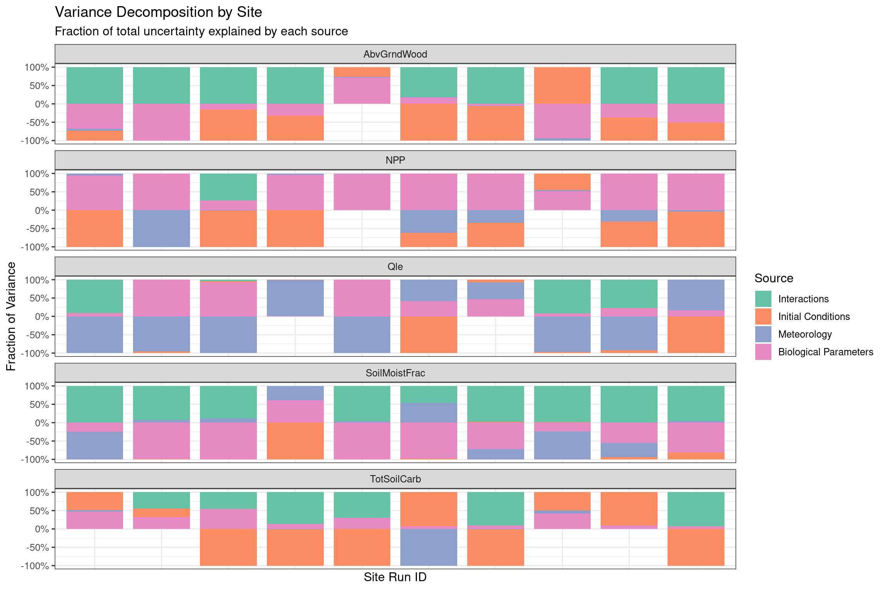
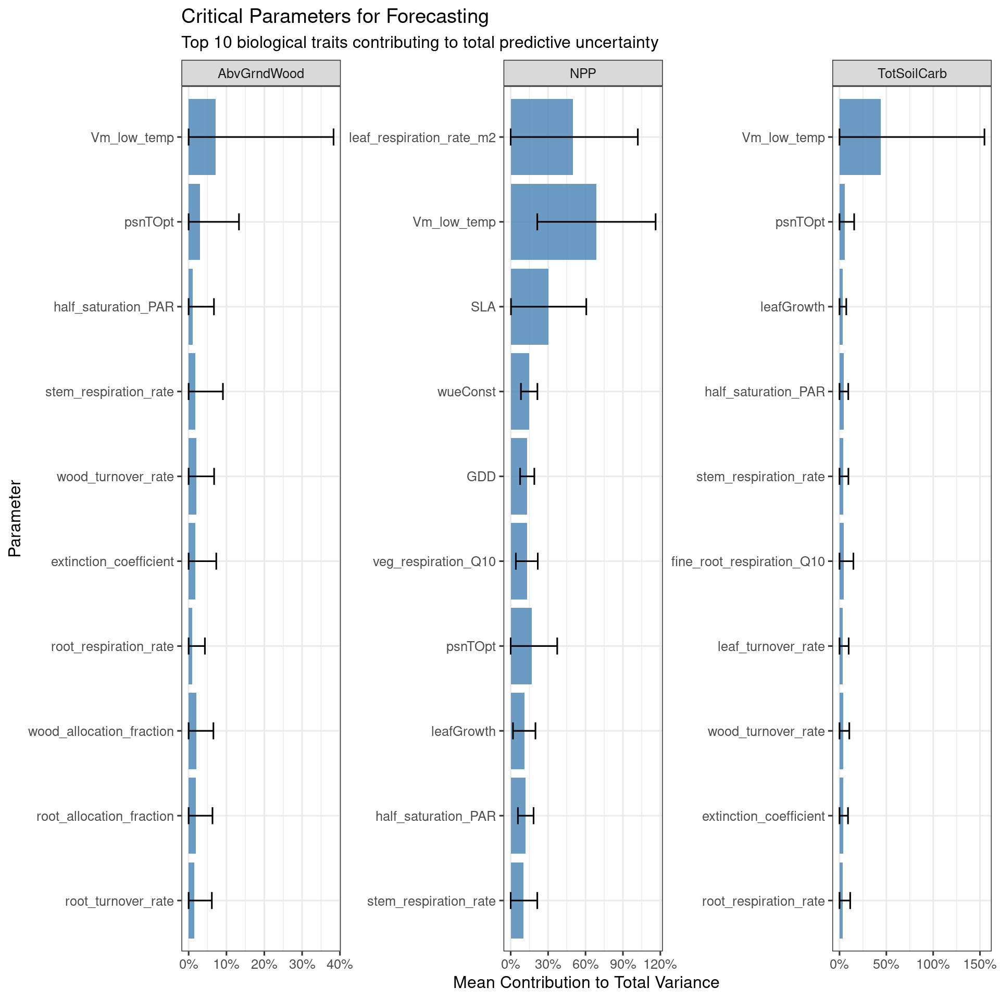
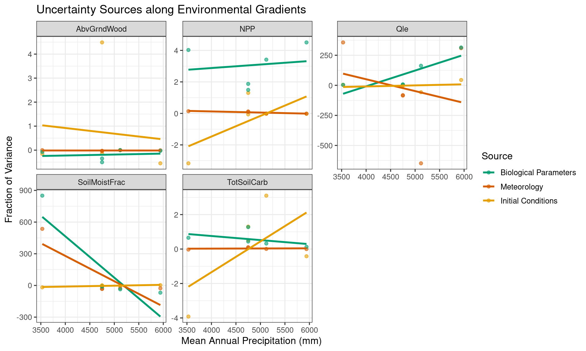

An Analysis Based on the Ecological Forecasting Framework
Author
Akash B V
Published
December 26, 2025
Executive Summary
Objective: To determine the most cost-effective strategies for reducing forecast uncertainty by identifying its primary drivers.
Key Findings:
Dominant Drivers: Forecast uncertainty is driven by distinct factors depending on the variable. Fast processes (e.g., carbon fluxes) are dominated by Meteorology, while slow processes (e.g., soil carbon) are dominated by Initial Conditions.
Critical Traits: The analysis identifies specific biological traits (e.g., temperature sensitivity, allocation fractions) that contribute disproportionately to uncertainty. Reducing uncertainty in these specific parameters will yield the highest return on investment.
Environmental Context: The sources of uncertainty shift across environmental gradients (e.g., precipitation), suggesting that management strategies may need to be site-specific.
Overview
This report performs a Variance Decomposition (Uncertainty Partitioning) of the SIPNET ecosystem model forecasts. Building on the previous Local (OAT) and Global (Sobol) sensitivity analyses, this step integrates these results to attribute the total predictive uncertainty to specific sources.
Theoretical Framework
Following the ecological forecasting framework (Dietze 2017), the variance of a forecast (\(Y\)) can be decomposed into contributions from the uncertainties in model inputs and drivers:
Driver Uncertainty (\(V_{Driver}\)): Uncertainty from meteorological forcing (e.g., Temperature, Precipitation).
Initial Conditions (\(V_{IC}\)): Uncertainty from the system’s starting state (e.g., Soil Carbon pools).
Interaction Variance (\(V_{Int}\)): Non-additive variance arising from the interplay between parameters and drivers.
Scope Note
Process Error is excluded from this specific analysis. In managed agricultural systems, process error is often driven by Model Structure rather than random stochasticity. This component will be assessed in a separate validation workflow.
Goal
To identify the dominant source of uncertainty for each site and variable. This informs whether future research should focus on field data collection (to reduce \(V_{Param}\)), sensor network improvement (to reduce \(V_{Driver}\)), or data assimilation (to constrain \(V_{IC}\)).
The Variance Budget (Source Partitioning)
We first examine the partition of total modeled variance into high-level categories across all sites.

Figure 1: Variance Budget: Relative contribution of Parameter, Driver (Met), Initial Conditions, and Interactions to total forecast variance.
Summary Statistics
Average contribution of each source across the network:
?(caption)
Interpretation
Parameters vs Drivers:
If Meteorology is the dominant term, predictive skill is limited by our ability to forecast weather (extrinsic forcing).
If Biological Parameters dominate, we can improve forecasts by collecting more trait data to constrain model physics (internal biology).
Initial Conditions (System Memory):
If Initial Conditions dominate (common for slow variables like Soil Carbon), the forecast is limited by our knowledge of the system’s starting state. Reducing this uncertainty requires site-specific inventory measurements or Data Assimilation.
Interactions:
A large interaction term implies that parameters behave differently under different weather conditions (non-additive effects), suggesting complex non-linear dynamics.
Parameter Breakdown (Hybrid Analysis)
While Global SA gives us the total variance due to all parameters (\(V_{Param}\)), we use the Local (OAT) Sensitivity results to subdivide this variance into individual traits. This identifies the specific biological mechanisms driving uncertainty.

Figure 2: Top 10 parameters contributing to Total Ensemble Variance. Calculated using the Hybrid Method: Global V_Param × Local Partial Variance Fraction.
Research Priorities
The parameters listed above have the highest Value of Information. Reducing the uncertainty (CV) of these specific parameters via literature review or field campaigns will yield the largest reduction in forecast error.
Environmental Gradient Analysis
Does the dominant source of uncertainty change depending on the environment? Here we test if the importance of Meteorology, Biology, or Initial Conditions shifts along climate gradients (e.g., Mean Annual Precipitation).

Figure 3: Shifts in uncertainty sources along the precipitation gradient (MAP). Points represent individual sites.
Total Modeled Uncertainty (Magnitude)
Finally, we look at the absolute magnitude of the uncertainty (\(\text{Var}(Y_{ens})\)). This tells us how uncertain we actually are, not just the proportions.
?(caption)
Conclusion
Variance Budget: We successfully decomposed the ensemble variance into internal and external drivers, highlighting distinct drivers for fast (fluxes) vs. slow (pools) variables.
Key Drivers: The hybrid analysis identified the specific parameters (Figure 2) that serve as the primary levers for model improvement.
Future Work: This analysis accounts for modeled uncertainty. The final step in the framework is to compare these variance estimates against observational data. Any remaining residual variance will primarily represent Model Structural Error (deficiencies in model physics) rather than stochastic noise.
References
[1] Dietze, M. C. (2017). Ecological Forecasting. Princeton University Press. (Chapter 11: Propagating, Analyzing, and Reducing Uncertainty).
[2] LeBauer, D. S., et al. (2013). Facilitating feedbacks between field measurements and ecosystem models. Ecological Monographs.
Source Code
---title: "Uncertainty Partitioning: Decomposing SIPNET Forecast Variance"subtitle: "An Analysis Based on the Ecological Forecasting Framework"author: "Akash B V"date: "`r Sys.Date()`"# format:# html:# self-contained: true# df-print: paged# toc: true# toc-depth: 3# code-fold: true# code-tools: true# theme: cosmo# number-sections: trueexecute: echo: false warning: false message: false cache: false---# Executive Summary**Objective:** To determine the most cost-effective strategies for reducing forecast uncertainty by identifying its primary drivers.**Key Findings:**1. **Dominant Drivers:** Forecast uncertainty is driven by distinct factors depending on the variable. Fast processes (e.g., carbon fluxes) are dominated by **Meteorology**, while slow processes (e.g., soil carbon) are dominated by **Initial Conditions**.2. **Critical Traits:** The analysis identifies specific biological traits (e.g., temperature sensitivity, allocation fractions) that contribute disproportionately to uncertainty. Reducing uncertainty in these specific parameters will yield the highest return on investment.3. **Environmental Context:** The sources of uncertainty shift across environmental gradients (e.g., precipitation), suggesting that management strategies may need to be site-specific.---# OverviewThis report performs a **Variance Decomposition** (Uncertainty Partitioning) of the SIPNET ecosystem model forecasts. Building on the previous Local (OAT) and Global (Sobol) sensitivity analyses, this step integrates these results to attribute the **total predictive uncertainty** to specific sources.## Theoretical FrameworkFollowing the ecological forecasting framework (Dietze 2017), the variance of a forecast ($Y$) can be decomposed into contributions from the uncertainties in model inputs and drivers:$$\text{Var}(Y) \approx V_{Parameter} + V_{Driver} + V_{InitialCond} + V_{Interaction}$$In this analysis, we focus on the **Modeled Variance** components derived from our Sobol ensemble:1. **Parameter Uncertainty ($V_{Param}$):** Uncertainty arising from biological traits (e.g., $A_{max}$, $SLA$).2. **Driver Uncertainty ($V_{Driver}$):** Uncertainty from meteorological forcing (e.g., Temperature, Precipitation).3. **Initial Conditions ($V_{IC}$):** Uncertainty from the system's starting state (e.g., Soil Carbon pools).4. **Interaction Variance ($V_{Int}$):** Non-additive variance arising from the interplay between parameters and drivers.::: callout-important## Scope NoteProcess Error is excluded from this specific analysis. In managed agricultural systems, process error is often driven by **Model Structure** rather than random stochasticity. This component will be assessed in a separate validation workflow.:::::: callout-note## GoalTo identify the **dominant source of uncertainty** for each site and variable. This informs whether future research should focus on **field data collection** (to reduce $V_{Param}$), **sensor network improvement** (to reduce $V_{Driver}$), or **data assimilation** (to constrain $V_{IC}$).:::```{r}#| label: setup#| include: falselibrary(readr)library(dplyr)library(tidyr)library(ggplot2)library(DT)library(stringr)library(here)library(config)library(knitr)library(scales)library(ggthemes)library(patchwork)here::i_am("analysis/variance_decomposition.qmd")# Load configurationcfg <- config::get(file = here::here("000-config.yml"))# Set pathsdata_dir <- here::here(cfg$paths$data_dir)plots_dir <- here::here(cfg$paths$data_dir, "plots")# Load data generated by scripts/031_partition_variance.R# 1. Site-level partition (The "Big Picture" - Param vs Met vs IC)site_partition <-read_csv(file.path(data_dir, "variance_partition_site_level.csv"), show_col_types =FALSE)# 2. Parameter-level Pprtition (The "Details" - Hybrid approach)param_partition <-read_csv(file.path(data_dir, "variance_partition_parameters.csv"), show_col_types =FALSE)# 3. Ensemble variance (Absolute magnitude of uncertainty)ensemble_var <-read_csv(file.path(data_dir, "ensemble_variance.csv"), show_col_types =FALSE)# 4. Site covariates (For Gradient analysis)site_covariates <-read_csv(here::here(cfg$paths$ccmmf_dir, "data/site_covariates.csv"), show_col_types =FALSE)# Theme setuptheme_set(theme_bw(base_size =12))```# The Variance Budget (Source Partitioning)We first examine the partition of total modeled variance into high-level categories across all sites.```{r}#| label: fig-variance-budget#| fig-cap: "Variance Budget: Relative contribution of Parameter, Driver (Met), Initial Conditions, and Interactions to total forecast variance."#| fig-height: 8#| fig-width: 12# Prepare data: Filter out 'dummy' (noise) and order categoriesplot_data <- site_partition %>%filter(category !="dummy") %>%mutate(category =factor(category, levels =c("interaction", "IC", "driver", "parameter")),# Create prettier labels for the plotcategory_label =recode(category, parameter ="Biological Parameters",driver ="Meteorology",IC ="Initial Conditions",interaction ="Interactions") )# Stacked bar chartp1 <-ggplot(plot_data, aes(x =as.factor(runid), y = frac_of_total, fill = category_label)) +geom_col(position ="fill", width =0.85) +facet_wrap(~variable, scales ="free", ncol =1) +scale_y_continuous(labels = percent) +scale_fill_brewer(palette ="Set2", name ="Source") +labs(title ="Variance Decomposition by Site",subtitle ="Fraction of total uncertainty explained by each source",x ="Site Run ID",y ="Fraction of Variance" ) +theme(axis.text.x =element_blank(), # Hide RunIDs if too many, or rotateaxis.ticks.x =element_blank(),legend.position ="right" )print(p1)```## Summary StatisticsAverage contribution of each source across the network:```{r}#| label: tbl-variance-summarysummary_table <- plot_data %>%group_by(variable, category_label) %>%summarise(Mean =mean(frac_of_total, na.rm =TRUE),SD =sd(frac_of_total, na.rm =TRUE),Min =min(frac_of_total, na.rm =TRUE),Max =max(frac_of_total, na.rm =TRUE),.groups ="drop" ) %>%mutate(across(where(is.numeric), percent, accuracy =0.1)) %>%arrange(variable, desc(Mean))DT::datatable(summary_table, caption ="Mean Variance Partitioning across all sites")```## Interpretation- **Parameters vs Drivers:** - If Meteorology is the dominant term, predictive skill is limited by our ability to forecast weather (extrinsic forcing). - If Biological Parameters dominate, we can improve forecasts by collecting more trait data to constrain model physics (internal biology).- **Initial Conditions (System Memory):** - If Initial Conditions dominate (common for slow variables like Soil Carbon), the forecast is limited by our knowledge of the system's starting state. Reducing this uncertainty requires site-specific inventory measurements or Data Assimilation.- **Interactions:** - A large interaction term implies that parameters behave differently under different weather conditions (non-additive effects), suggesting complex non-linear dynamics.# Parameter Breakdown (Hybrid Analysis)While Global SA gives us the total variance due to all parameters ($V_{Param}$), we use the Local (OAT) Sensitivity results to subdivide this variance into individual traits. This identifies the specific biological mechanisms driving uncertainty.```{r}#| label: fig-param-breakdown#| fig-cap: "Top 10 parameters contributing to Total Ensemble Variance. Calculated using the Hybrid Method: Global V_Param × Local Partial Variance Fraction."#| fig-height: 10#| fig-width: 10# 1. Aggregate parameter contribution across all sites# We calculate the mean fractional contribution of each parameter to the TOTAL varianceparam_ranks <- param_partition %>%filter(!is.na(frac_of_total)) %>%group_by(response_var, parameter) %>%summarise(mean_contribution =mean(frac_of_total, na.rm =TRUE),sd_contribution =sd(frac_of_total, na.rm =TRUE),.groups ="drop" ) %>%group_by(response_var) %>%slice_max(order_by = mean_contribution, n =10) %>%# Top 10 per variableungroup()# 2. Plotggplot(param_ranks, aes(x =reorder(parameter, mean_contribution), y = mean_contribution)) +geom_col(fill ="steelblue", alpha =0.8) +geom_errorbar(aes(ymin =pmax(0, mean_contribution - sd_contribution), ymax = mean_contribution + sd_contribution), width =0.2) +coord_flip() +facet_wrap(~response_var, scales ="free") +scale_y_continuous(labels = percent) +labs(title ="Critical Parameters for Forecasting",subtitle ="Top 10 biological traits contributing to total predictive uncertainty",x ="Parameter",y ="Mean Contribution to Total Variance" )```::: callout-tip## Research PrioritiesThe parameters listed above have the highest Value of Information. Reducing the uncertainty (CV) of these specific parameters via literature review or field campaigns will yield the largest reduction in forecast error.:::# Environmental Gradient AnalysisDoes the dominant source of uncertainty change depending on the environment? Here we test if the importance of Meteorology, Biology, or Initial Conditions shifts along climate gradients (e.g., Mean Annual Precipitation).```{r}#| label: fig-gradient-analysis#| fig-cap: "Shifts in uncertainty sources along the precipitation gradient (MAP). Points represent individual sites."#| fig-height: 6#| fig-width: 10# 1. Join variance partitioning results with Site Covariatesgradient_data <- site_partition %>%filter(category %in%c("parameter", "driver", "IC")) %>%left_join(site_covariates, by =c("site_id"="site_id")) %>%filter(!is.na(precip)) %>%mutate(category =factor(category, levels =c("parameter", "driver", "IC")))# 2. Plot parameter vs driver vs IC importance against MAPggplot(gradient_data, aes(x = precip, y = frac_of_total, color = category)) +geom_point(alpha =0.6) +geom_smooth(method ="lm", se =FALSE) +facet_wrap(~variable, scales ="free_y") +scale_color_manual(values =c("parameter"="#009E73", "driver"="#D55E00", "IC"="#E69F00"),labels =c("parameter"="Biological Parameters", "driver"="Meteorology", "IC"="Initial Conditions") ) +labs(title ="Uncertainty Sources along Environmental Gradients",x ="Mean Annual Precipitation (mm)",y ="Fraction of Variance",color ="Source" )```# Total Modeled Uncertainty (Magnitude)Finally, we look at the absolute magnitude of the uncertainty ($\text{Var}(Y_{ens})$). This tells us how uncertain we actually are, not just the proportions.```{r}#| label: tbl-absolute-variance# Summarize the raw variance (from ensemble_variance.csv)abs_var_summary <- ensemble_var %>%group_by(variable) %>%summarise(Mean_Var =mean(ensemble_variance, na.rm =TRUE),Mean_SD =mean(sqrt(ensemble_variance), na.rm =TRUE), # Standard deviation is easier to interpretMax_SD =max(sqrt(ensemble_variance), na.rm =TRUE) ) %>%mutate(across(where(is.numeric), \(x) round(x, 2)))DT::datatable(abs_var_summary, caption ="Absolute Magnitude of Forecast Uncertainty (Standard Deviation in variable units)")```# Conclusion- **Variance Budget:** We successfully decomposed the ensemble variance into internal and external drivers, highlighting distinct drivers for fast (fluxes) vs. slow (pools) variables.- **Key Drivers:** The hybrid analysis identified the specific parameters (Figure 2) that serve as the primary levers for model improvement.- **Future Work:** This analysis accounts for modeled uncertainty. The final step in the framework is to compare these variance estimates against observational data. Any remaining residual variance will primarily represent **Model Structural Error** (deficiencies in model physics) rather than stochastic noise.# References[1] Dietze, M. C. (2017). Ecological Forecasting. Princeton University Press. (Chapter 11: Propagating, Analyzing, and Reducing Uncertainty).[2] LeBauer, D. S., et al. (2013). Facilitating feedbacks between field measurements and ecosystem models. Ecological Monographs.